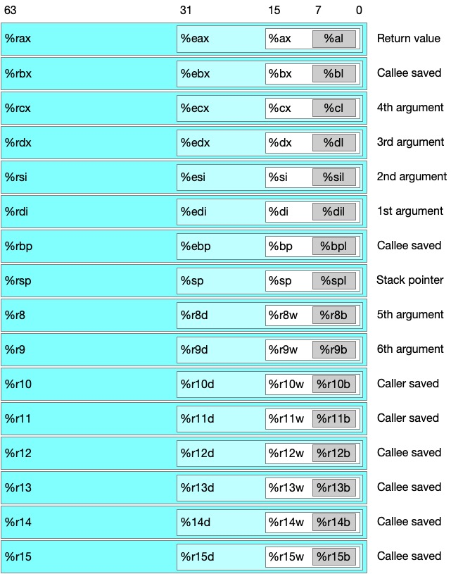

Table of Contents
Computer System: A Programmer's Perspective 1
Chapter A Tour of Computer System
1.7 The Operating System Manages the Hardware
The operating system has two primary purposes: (1) to protect the hardware from misuse by runaway applications (2) to provide applications with simple and uniform mechanisms for manipulating complicated and often wildly different low-level hardware devices.
- 1.7.3 Virtual Memory
- Program code and data. Code begins at the same fixed address for all processes, followed by data locations that correspond to global C variables.
- Heap.
mallocandfree. - *Shared libraries. *
- Stack. top of user's virtual address space.
- Kernel virtual memory: The top region of the address space is reserved for the kernel.
Chapter 3 Machine-Level Representation of Programms
3.1 A Historical Perspective
3.2 Program Encodings
- 3.2.1 Machine-Level Code
processor state are visible that normally are hidden from the C programmer
- The program counter (%rip in x86-64) indicates the address in memory of the next instruction to be executed
- The integer register file contains 16 named locations storing 64-bit values.
- The condition code register hold status information about the most recently executed arithmetic or logical instruction.
- A set of vector registers can each hold one or more integer or floating-point values.
- 3.2.2 Code Examples
long mult2(long, long);
void multstore(long x, long y, long *dest) { long t = mult2(x, y); *dest = t; }
generate assembly code by C compiler:
linux> gcc -Og -S mstore.c
Aside How do I display the byte representation of a program?
(gdb) x/14xb multstore 0x0 <multstore>: 0x53 0x48 0x89 0xd3 0xe8 0x00 0x00 0x00 0x8 <multstore+8>: 0x00 0x48 0x89 0x03 0x5b 0xc3
objdump -d mstore.oget detail.0: 53 push %rbx 1: 48 89 d3 mov %rdx,%rbx 4: e8 00 00 00 00 callq 9 <multstore+0x9> 9: 48 89 03 mov %rax,(%rbx) c: 5b pop %rbx d: c3 retq
gcc -Og -o prog main.c mstore.c objdum -d prog
prog: file format elf64-x86-64 0000000000400563 <mult2>: 400563: 48 89 f8 mov %rdi,%rax 400566: 48 0f af c6 imul %rsi,%rax 40056a: c3 retq 000000000040056b <multstore>: 40056b: 53 push %rbx 40056c: 48 89 d3 mov %rdx,%rbx 40056f: e8 ef ff ff ff callq 400563 <mult2> ; callq use in calling the function 400574: 48 89 03 mov %rax,(%rbx) 400577: 5b pop %rbx 400578: c3 retq 400579: 0f 1f 80 00 00 00 00 nopl 0x0(%rax) ; inserted to grow the code for the function 16-bytes
- 3.2.3 Notes on Formating
[root@iz2zea5bxfhn21swfxzfzmz CSAPP]# gcc -Og -S mstore.c.file "mstore.c" .text .globl multstore .type multstore, @function multstore: .LFB0: .cfi_startproc pushq %rbx .cfi_def_cfa_offset 16 .cfi_offset 3, -16 movq %rdx, %rbx call mult2 movq %rax, (%rbx) popq %rbx .cfi_def_cfa_offset 8 ret .cfi_endproc .LFE0: .size multstore, .-multstore .ident "GCC: (GNU) 4.8.5 20150623 (Red Hat 4.8.5-39)" .section .note.GNU-stack,"",@progbits
3.3 Data Formats
| C declaration | Intel data type | Assembly-code suffix | Size(bytes) |
|---|---|---|---|
| char | Byte | b | 1 |
| short | Word | w | 2 |
| int | Double word | l | 4 |
| long | Quad word | q | 8 |
| char * | Quad word | q | 8 |
| float | single precision | s | 4 |
| double | double precision | l | 8 |
3.4 Acessing Information

Figure 1: Figure 3.2 Integer registers
- 3.4.1 Operand Specifiers
Table 2: 3.3. Operand forms Type Form Operand value Name Immediate $Imm Imm Immediate Register r Memory Imm Absolute Memory (r ) M[R[ r ]] Indirect Memory Imm (r ) M[Imm + R[ r ]] Base + displacement Memory (r r ) M[R[ r ] + R[ r ]] Indexed Memory Imm(r, r ) M[Imm + R[r ] + R[r ]] Indexed Memory (,r ,s) M[R[r] ⋅ s] Scaled indexed Memory Imm(,r ,s) M[Imm + R[r ] ⋅ s] Scaled indexed Memory (r ,r ,s) M[R[r] + R[r] ⋅ s] Scaled indexed Memory Imm(r ,r ,s) M[Imm + R[r ] + R[r] ⋅ s] Scaled indexed *******ractice Problem 3.1
Address Value 0x100 0xFF 0x104 0xAB 0x108 0x13 0x10C 0x11 Register Value %rax 0x100 %rcx 0x1 %rdx 0x3 Fill the Value (NOTE is the process)
Operand Value NOTE %rax 0x100 0x104 0xAB $0x108 0x108 (%rax) 0xFF 0x100 4(%rax) 0xAB 0x100 + 4 9($rax, %rdx) 0x11 0x100 + 0x3 + 9 = 0x10C 260(%rcx,%rdx) 0x13 0x1 + 0x3 + 0x104 = 0x108 0xFC(, %rcx, 4) 0x13 0xFC + 0x1 * 4 = 0x108 (%rax, %rdx, 4) 0x11 0x100 + 0x3 * 4 = 0x10C - 3.4.2 Data Movement Instructions
Table 3: Figure 3.4 Simple data movement instructions Instruction Effect Description size Movement S, D D <- S Move S to D movb move byte 1 movw move word 2 movl move double word 4 movq move quad word 8 moveabsq I,R R <- I move absolute quad word 8 movq:
src dst src, dst C Analog movq Imm Reg movq $0x4, %rax temp = 0x4 Mem movq $-147, (%rax) *p = -147 Reg Reg movq %rax, %rdx temp2 = temp1 Mem movq %rax, (%rdx) *p = temp Mem reg movq (%rax), %rdx temp = *p C:
void swap(long *xp, long *yp) { long t0 = *xp; long t1 = *yp; *xp = t1; *yp = t0; }
assembly:
swap: movq (%rdi), %rax ; t0 = *xp movq (%rsi), %rdx ; t1 =*yp movq %rdx, (%rsi) ; *xp = t1 movq %rax, (%rdi) ; *yp = t0 ret
Aside Understanding how data movement changes a destination register
movabsq $0x00111223344556677, %rax ;; %rax = 0011223344556677 movb $-1, %al ;; %rax = 00112233445566FF movw $-1, %ax ;; %rax = 001122334455FFFF movl $-1, %eax ;; %rax = 00000000FFFFFFFF movq $-1, %rax ;; %rax = FFFFFFFFFFFFFFFF
Table 4: Figure 3.5 Zero-extending data movement instructions Instruction Effect Description MOVZ S,R R<–ZeroExtend(S) Move with zero extension movzbw move zero-extended byte to word movzbl move zero-extended byte to double word movzwl move zero-extended word to double word movzbq move zero-extended byte to quad word movzwq move zero-extended word to quad word Table 5: Figure 3.6 Sign-extending data movement instructions Instruction Effect Description MOVS S,R R<–SignedExtend(S) Move with sign extension movsbw Move sig-extended byte to word movsbl move sign-extended byte to word movswl move sign-extended byte to double word movsbq move sign-extended word to double word movswq move sign-extended byte to quad word movslq ove sign-extended double word to quad word cltq %rax<–SignedExtend(%eax) Sign-extend %eax to %rax - Practice Problem 3.2
fill the mov_
movl %eax, (%rsp) movw (%rax), %dx movb $0xFF, %bl movb (%rsp, %rdx, 4), %dl movq (%rdx), %rax movw %dx, (%rax)
Aside Comparing byte movement instructions
movabsq $0x0011223344556677, %rax ;; %rax = 0011223344556677 movb $0xAA, %dl ;; %dl = AA movb %dl, %al ;; %rax = 00112233445566AA movsbq %dl, %rax ;; %rax = FFFFFFFFFFFFFFAA movzbq %dl, %rax ;; %rax = 00000000000000AA
*******ractice Problem 3.3
Explain why error generated
movb $0xF, (%ebx) ; %ebx cannot be address register movl %rax, (%rsp) ; mismatch between instruction suffix and register ID movw (%rax), 4(%rsp) ; cannot have both source and destination be memory references movb %al, %sl ; no register named %sl movq %rax, $0x123 ; cannot have immediate as destination movl %eax, %rdx ; should be movq movb %si, 8(%rbp) ; mismatch between instruction suffix and register ID
- 3.4.3 Data Movement Example
a. C code
long exchange(long *xp, long y) { long x = *xp; *xp = y; return x; }
b. Assembly code
exchange: movq (%rdi), %rax movq %rsi, (%rdi) ret
- Practice Problem 3.4
Assume variables sp and dp are declared with types
src_t *sp; dest_t *dp;
to implement the operation:
*dp = (dest_t) *sp;
src_t dest_t Instruction Comments long long movq (%rdi), %rax Read 8 bytes movq %rax, (%rsi) Store 8 bytes char int movsbl (%rdi), %eax Convert char to int movl %eax, (%rsi) Store 4 bytes char unsigned movzbl (%rdi), %eax Convert char to int movl %eax, (%rsi) sotre 4 bytes unsigned char long movzbl (%rdi), %ax [movzbq (%rdi), %rax)?] Read byte and zero-extend movq %rax, (%rsi) Store 8 bytes int char movl (%rdi), %eax Read 4 bytes movb %al, (%rsi) Store low-order bytes unsigned unsigned movl (%rdi), %eax Read 4 bytes char movb %al, (%rsi) Store low-order bytes char short movsbw (%rdi), %ax Read byte and sign-extend movw %ax, (%rsi) Store 2 bytes *******ractice Problem 3.5 A function with prototype
void decodel(long *xp, long *yp, long *zp);
compiled into assembly code, yielding the following
void decodel(long *xp, long *yp, long *zp) xp in %rdi, yp in %rsi, zp in %rdx decodel: movq (%rdi), %r8 movq (%rsi), %rcx movq (%rdx), %rax movq %r8, (%rsi) movq %rcx, (%rdx) movq %rax, (%rdi) ret
C code for
decodelvoid decodel(long *xp, long *yp, long *zp) { long x, y, z; *xp = x; *yp = y; *zp = z; x = *yp; y = *zp; z = *xp; } /* REVISE */ /* move LEFT to RIGTH! */ void decodel(long *xp, long *yp, long *zp) { long x = *xp; long y = *yp; long z = *zp; *yp = x; *zp = y; *xp = z; }
- Practice Problem 3.4
- 3.4.4 Pushing and Popping Stack Data
Table 6: Figure 3.8 Push and pop instruction Instruction Effect Description Equivalent to pushq S R[%rsp] <- R[%rsp] - 8; Push quad word subq $8, %rsp # Decrement stack pointer M[R[%rsp]] <- S movq %rbp, (%rsp) # Store %rbp on stack popq S D <- M[R[%rsp]]; pop quad word movq %(rsp), %rax # Read %rax from stack R[%rsp] <- R[%rsp] + 8 addq $8, %rsp # Increment stack pointer
3.5 Arithmetic and Logical Operations
- 3.5.1 Load Effective Address
- Note taken on
bit manipulation - The difference between logical shift right, arithmetic shift right, and rotate right - Stack Overflow
load effective address instruction
leaqis actually a variant of themovqinstruction.Instruction Effect Description leaq
INC
DEC
NEG
NOT
Add
SUB
IMUL
XOR
OR
AND
SAL
SHL
SAR
SHRS,D
D
D
D
D
S,D
S,D
S,D
S,D
S,D
S,D
k,D
k,D
k,D
k,DD <- &S
D <- D+1
D <- D-1
D <- -D
D <- ~D
D <- D + S
D <- D - S
D <- D * S
D <- D ^ S
D <- D \ver S
D <- D & S
D <- D << k
D <- D << k
D <- D >> $_{A}$ k
D <- D >> $_{L}$ kLoad effective address
Increment
Decrement
Negate
Complement
Add
Subtract
Multiply
Exclusive-or
Or
And
Left shift
Left shift (same as SAL)
Arithmetic right shift
Logical right shift- Practice Problem 3.6
Fill the result (%rax = x, %rcx = y)
Instruction Result leaq 6(%rax), %rdx6 + x leaq (%rax, %rcx), %rdxx + y leaq (%rax, %rcx, 4), %rdxx + 4y leaq 7(%rax, %rax, 8), %rdx7 + 9x leaq 0xA(, %rcx, 4), %rdx10 + 4y leaq 9(%rax, %rcx, 2), %rdx9 + x + 2y consider the following C program:
long scale(long x, long y, long z) { long t = x + 4 * y + 12 * z; return t; }
;; long scale(long x, long y, long z) ;; x in %rsi, y in %rdi, z in %rdx scale: leaq (, %rsi, 4), %rax ; x + 4*y leaq (%rdx, %rdx, 2), %rdx ; z + 2*z = 3 * z leaq (%rax, %rdx, 4), %rax ; (x + 4*y) + 4 * (3 * z) = x + 4 * y + 12 * z; ret
*******ractice Problem 3.7 fill the C code from asm
long scale2(long x, long y, long z) { long t = 5 * x + 2 * y + 8 * z; return t; }
;; long scale2(long x, long y, long z) ;; x in %rdi, y in %rsi, z in %rdx scale2: leaq (%rdi, %rdi, 4), %rax ; y + 4x = 5x leaq (%rax, %rsi, 2), %rax ; 5x + 2y leaq (%rax, %rdx, 8), %rax ; 5x + 2y + 8z ret
- Note taken on
- 3.5.2 Unary and Binary Operations
- Practice Problem 3.8
Assume the following values are stored
Address Value 0x100 0xFF 0x108 0xAB 0x110 0x13 0x118 0x11 Register Value %rax0x100 %rcx0x1 %rdx0x3 Instruction Destination Value Detail and rectify addq %rcx, (%rax)0x100 0x100 0xff + 0x1 subq $rdx, 8(%rax)0x108 0xA8 0xAB - 0x3 imulq $16, ( %rax, %rdx, 8)0x118 0x110 0x11 * 16 incq 16(%rax)0x100 (0x110) 0x14 (0x13 + 1) decq %rcx%rcx 0x0 0x1 - 1 subq %rdx, %rax%rax 0xFD 0xff - 0x3
- Practice Problem 3.8
- 3.5.3 Shift Operations
*******ractice Problem 3.9 C function:
long shift_left4_rightn(long x, long n) { x <<= 4; x >>=n ; return x; }
assembly:
;; long shift_left4_rightn(long x, long n) ;; x in %rdi, n in %rsi shift_left4_rightn: movq %rdi, %rax ; Get x salq $4, %rax ; x <<= 4 movq %esi, %ecx ; Get n (4 bytes) sarq %ecx, %rax ; x >>= n ret
C code
long arith(long x, long y, long z) { long t1 = x ^ y; long t2 = z * 48; long t3 = t1 & 0x0F0F0F0F; long t4 = t2 - t3; return t4; }
assembly:
;; long arith(long x, long y, long z) ;; x in %rdi, y in %rsi, z in %rdx arith: xorq %rsi, %rdi leaq (%rdx, %rdx, 2), %rax salq $4, %rax andl $0x0F0F0F0F, %edi ; 4 bytes, so %edi subq %rdi, %rax ret
- 3.5.4 Discussion
*******ractice Problem 3.10 C code:
long arith2(long x, long y, long z) { long t1 = x | y ; long t2 = t1 >> 3; long t3 = ~t2; long t4 = z-t3; return t4; }
generated assembly code:
;; long arith2(long x, long y, long z) ;; x in %rdi, y in %rsi, z in %rdx arith2: orq %rsi, %rdi ; t1 = x | y? sarq $3, %rdi ; t2 = t1 >> 3? notq %rdi ; t3 = ~t2 movq %rdx, %rax ; t4 = z? subq %rdi, %rax ; t4 = t4 - t3? ret
- 3.5.5 Special Arithmetic Operations
Table 8: Figure 3.12 Special arithmetic operations Instruction Effect Description imulq S R[%rdx]: R[%rax] <- S * R[%rax] Signed full multiply mulq S R[%rdx]: R[%rax] <- S * R[%rax] Unsigned full multiply cqto S R[%rdx]: R[%rax] <- SignExtend(R[%rax]) convert to oct word idviq S R[%rdx] <- R[%rdx]:R[%rax] mod S; Signed divide R[%rax] <- R[%rax]:%[%rax] / S divq S R[%rdx] <- R[%rdx]:R[%rax] mod S; Unsigned divide R[%rax] <- R[%rax]:%[%rax] / S example: C code
#include <inttypes.h> typedef unsigned __int128 uint128_t; void store_uprod(uint128_t *dest, uint64_t x, uint64_t y) { *dest = x * (uint128_t)y; }
generated assembly:
;; void store_uprod(uint128_t *dest, uint64_t x, uint64_t y) ;; dest in %rdi, x in %rsi, y in %rdx store_uprod: movq %rsi, %rax ; copy x to multiplicand mulq %rdx ; multiply by y movq %rax, (%rdi) ; store lower 8 bytes at dest movq %rdx, 8(%rdi) ; store upper 8 bytes at dest+8 ret
c code:
void remdiv(long x, long y, long *qp, long *rp) { long q = x / y; long r = x % y; *qp = q; *rp = r; }
generated assembly:
;; void remdiv(long x, long y, long *qp, long *rp) ;; x in %rdi, y in %rsi, qp in %rdx, rp in %rcx remdiv: movq %rdx, %r8 ; copy qp movq %rdi, %rax ; move x to lower 8 bytes of dividend cqto ; sign-extend to upper 8 bytes of dividend idivq %rsi ; divide by y movq %rax, (%r8) ; store quotient at qp movq %rdx, (%rcx) ; store reminder at rp ret
- Practice Problem 3.12
c code:
void uremdiv(unsigned long x, unsigned long y, unsigned long *qp, unsigned long *rp) { unsigned long q = x / y; unsigned long r = x % y; *qp = q; *rp = r; }
implement assembly code:
;; void remdiv(long x, long y, long *qp, long *rp) ;; x in %rdi, y in %rsi, qp in %rdx, rp in %rcx remdiv: movq %rdx, %r8 ; copy qp movq %rdi, %rax ; move x to lower 8 bytes of dividend cqto ; sign-extend to upper 8 bytes of dividend divq %rsi ; divide by y movq %rax, (%r8) ; store quotient at qp movq %rdx, (%rcx) ; store reminder at rp ret
- Some Arithmetic Operations
Format Computation addq src,dst dst = dst + src subq src,dst dst = dst - src imulq src,dst dst = dst * src salq src,dst dst = dst << src Also called shlq sarq src,dst dst = dst >> src Arithmetic shrq src,dst dst = dst >> src Logic xorq src,dst dst = dst ^ src andq src,dst dst = dst & src orq src,dst dst = dst | src
3.6 Control
- 3.6.1 Condition Codes
CF: carry flag. Used to detect overflow for unsigned operations
ZF: zero flag.
SF: Sign flag.
OF: overflow flag. caused a two's-complement overflow - either negative or positive.
Example:
t = a + b- CF set if carry out from most significant bit (unsigned overflow)
- ZF set if t == 0
- SF set if t < 0
- OF set if
(a > 0 && b > 0 && t < 0) || (a < 0 && b < 0 && t > 0)
The
leaqinstruction does not alter any condition codes, since it is intended to be used in address computations.
Table 9: Figure 3.13 Comparison and test instructions Instruction Based on Description CMP S_1, S_2 S_2 - S_1 Compare cmpbCompare byte cmpwCompare word cmplCompare double word cmpqCompare quad word TEST S_1, S_2 S_1 & S_2 TEST testbtestwtestltestq - 3.6.2 Accessing the Condition Codes
three ways to use the condition codes:
- set a single byte to 0 or 1 depending on some combination of the condition codes
- conditionally jump to some other part of the program
- conditinoally transfer data
Table 10: Figure 3.14 The SETinstructionsInstruction Synonym Effect Set condition seteDsetzD <- ZFEuqal/zero setneDsetnzD <- ~ ZFNot euqal/not zero setsNegative setnsNonnegative Signed setgsetnleD <- ~ (SF ^ OF) & ~ ZFGreater (signed >) setgesetnlD <- ~ (SF ^ OF)Greater or equal (signed >=) setlsetngeD <- SF ^ OFLess (signed <) setlesetngD <- (SF ^ OF) \vert ZFLess or equal (signed <=) Unsigned setasetnbeD <- ~ CF & ~ ZFAbove (unsigned >) setaesetnbD <- ~ CFAbove or euqal(unsigned >=) setbsetnaeD <- CFBelow (unsigned <) setbesetnaD <- CF \vert ZFBelow or equal (unsigned <=) ;; int comp(data_t a, data_t b) ;; a in %rdi, b in %rsi comp: cmpq %rsi, %rdi ; compare a:b setl %al ; set low-order byte of %eax to 0 or 1 (depends on the result of a-b) movzbl %al, %eax ; Clear rest of %eax (and rest of %rax) ret
- Practice Problem 3.13
C code:
int comp(data_t a, data_b b) { return a COMP b; }
determine which data type is for
data_tand which COMP could causeA.
cmpl %esi, %edi setl %al ; <
`l` means 32-bit,
setlis for signed, sodata_tisintB.
cmpw %si, %di setge %al ; >=
`w` means 16-bit,
setgeis for signed, sodata_tisshortC.
cmpb %sil, %dil setbe %al ; <=
`b` means 8-bit,
setbeis for unsigned, sodata_tisunsigned charD.
cmpq %rsi, %rdi setne %a ; !=
`q` means 64-bit,
setnedoes not matter signed or not, sodata_tcan belongorunsigned long
- Practice Problem 3.14
The C code:
int test(data_t a) { return a TEST 0; }
A
testq %rdi, %rdi setge %al ; >=
longB
testw %di, %di sete %al ; ==
short,unsigned shortC
testb %dil, %dil seta %al ; >
unsigned charD
testl %edi, %edi setle %al ; <=
int
- 3.6.3 Jump Instructions
Table 11: Figure 3.15 The jump instructions. Instruction Synonym Condition jmpLabel 1 Direct jump jmp*Operand 1 Indirect jump jeLabel jzZF Euqal/zero jnejnz~ZF Not equal/not zero jsSF Negative jns~SF jgjnle~(SF ^ OF) & ~ZF Greater (signed > ) jgejnl~(SF ^ OF) signed >= jljngeSF ^ OF signed < jlejng(SF ^ OF) | ZF signed <= jajnbe~CF & ~ZF unsigned > jaejnb~CF unsigned >= jbjnaeCF unsigned < jbejnaCF | ZF unsigned <= jmp *%rax
uses the value in
%raxas the jump targetjmp *(%rax)
reads the jump target from memory, using the value in
%raxas the read address - 3.6.4 Jump Instruction Encodings
Aside What do the instructions
repandrepzdo?See - AMD: 8.3 Repeated String Instructions
They recommend using the combination of rep followed by ret to avoid making the ret instruction the destination of a conditional jump instruction. Without the rep instruction, the jg instruction (line 7 of the assembly code) would proceed to the ret instruction when the branch is not taken. ”
Excerpt From: Randal E. Bryant. “Computer Systems: A Programmer's Perspective.
0: 48 89 f8 mov %rdi,%rax 3: eb 03 jmp 8 <loop+0x8> ; 0x5(the next addr) + 0x3 = 0x8 5: 48 d1 f8 sar %rax 8: 48 85 c0 test %rax,%rax b: 7f f8 jg 5 <loop+0x5> ; 0xd(the nex addr) - 0x8 = 0x5 d: f3 c3 repz retq
- Practice Problem 3.15
A. What is the target of the
jeinstruction below?4003fa: 74 02 je XXXXXX 4003fc: ff d0 callq *%rax
ans. : 0x4003fc + 0x20 = x40043e
B. What is the target of the
jeinstruction below?40042f: 74 f4 je XXXXXX 400431: 5d pop %rbp
ans. : do pop on 0x40033b (0xf4 is -12, so 0x400431 - 12 = 0x400425)
C. What is the address of the
jaandpopinstructions ?XXXXXX: 77 02 ja 400547 (+0x2 = 0x400547-0x2) XXXXXX: 5d pop %rbp (+0x2 = 0x400547)
jaaddr: 0x400545 (right answer: 0x400543,jaitself has 2 bytes, namely 0x400547 - 02 - 02 = 400543)popaddr: 0x400547 (right answer: 0x400545,popitslef has 2 bytes, namely 0x400547 - 02 = 0x400545)D. In the code that follows, the jump target is encoded in PC-relative form as a 4-byte two's complement number. The bytes are listed from least significant to most, reflecting the litte-endian byte ordering of X86-64. What is the address of the jump target?
4005e8: e9 73 ff ff ff jmpq XXXXXX 4005ed: 90 nop
ans: 0x4005ed - 0xffffff73(-141) = 0x400560
- 3.6.5 Implementing Conditional Branches with Conditional Contral
- Figure 3.16 Compilation of conditional statements
;; long absdiff_se(long x, long y) ;; x in %rdi, y in %rsi absdiff_se: cmpq %rsi, %rdi ; compare x y jge .L2 ; if (x >= y) { goto .L2; } addq $1,lt_cnt(%rip) ; lt_cnt++; movq %rsi,%rax ; int ret = y; subq %rdi,%rax ; ret -= x; ret ; return ret; .L2: addq $1,ge_cnt(%rip) ; ge_cnt++ movq %rdi,%rax ; int ret = x; subq %rsi,%rax ; ret -= y; ret ; return ret;
Using
gotostatements is generally considered a bad programming style, since their use can make code very difficult to read and debug.- Practice Problem 3.16
void cond(long a, long *p) { if (p && a > *p) *p = a; }
;; void cond(long a, long *p) ;; a in %rdi, p in %rsi cond: testq %rsi, %rsi ; if (p is not null) je .L1 ; if (!p) { goto .L1; } cmpq %rdi, (%rsi) jge .L1 ; if (*p >= a) { goto .L1; } movq %rdi, (%rsi) ; *p = a .L1: rep ; ret
A. write a goto version in C
void cond(long a, long *p) { if (!p) { goto end; } if (*p >= a) { goto end; } *p = a; end: return; }
B. Explain why the assembly code contains two conditional branches: \ ans: because p && a > *p means two conditions, and the order is from left to right.
- Practice Problem 3.17
A. Rewrite
absdiff_sebased on if-goto rulelong absdiff_se(long x, long y) { long result; if (x >= y) { goto x_ge_; } else { lt_cnt++; result = y - x; goto done; } x_ge_y: ge_cnt++; result = x - y; done: return result; }
B. reasons:
a) the code is note readable (it's not parallel in look)
b) it's difficult to find label if there are too many ones.
- Practice Problem 3.18
fulfill C code from assembly code
long test(long x, long y, long z) { long val = ; if (x < -3) { if (y < z) val = x * y; else val = y * z; } else if (x > 2) val = x * z; return val; }
;; long test (long x, long y, long z) ;; x in %rdi, y in %rsi, z in %rdx test: leaq (%rdi,%rsi), %rax addq %rdx,%rax cmpq $-3,%rdi ; compare jge .L2 ; if (x >= -3) { goto .L2; } cmpq %rdx,%rsi jge .L3 ; if (x < -3 && y >= z) { goto .L3; } movq %rdi,%rax ; if (x < -3 && y < z) { val = x; } imulq %rsi,%rax ; if (x < -3 && y < z) { val = x * y; } ret .L3: movq %rsi,%rax ; if (x < -3 && y >= z) { val = y; } imulq %rdx,%rax ; if (x < -3 && y >= z) { val = y * z; } ret .L2: cmpq $2,%rdi ; if (x >= -3) jle .L4 ; if (x >= -3 && x <= 2) { goto .L4; } movq %rdi,%rax ; if (x >= -3 && x > 2) { val = x; } imulq %rdx,%rax ; if (x >= -3 && x > 2) { val = x * z; } .L4: rep ; ret val;
- 3.6.6 Implementing Conditional Branches with Conditional Moves
- Figure 3.17 Compilation of conditional statements using conditional assignment. (a) Original C code
long absdiff(long x, long y) { long result; if (x < y) result = y - x; else result = x - y; return result; }
(b) Implementing using conditional assignment
long cmovdiff(long x, long y) { long rval = y - x; long eval = x - y; long test = x >= y; /* Line below requires single instruction: */ if (ntest) { rval = eval; } return rval; }
(c) Generated assembly code
;; long absdiff(long x, long y) ;; x in %rdi, y in %rsi absdiff: movq %rsi, %rax subq %rdi, %rax ; rval = y - x movq %rdi, %rdx subq %rsi, %rdx ; eval = x - y cmpq %rsi, %rdi ; compare x:y cmovge %rdx, %rax ; if (x >= y) ret
The key is that the single
cmovgeinstruction of the assembly code implements the conditional assignment ofcmovdiff. It will transfer the data from the source register to the destination, only if thecmpqinstruction of line 6 indicates that value is greater than or equal to the other (as indicated by the suffixge).This approach achieves high performance by overlapping the steps of the successive instructions.
misprediction penalty is \(T_{avg}(P) = (1 - P)T_{OK} + T_{MP} = T_OK + PT_{MP}.\)
\begin{align*} T_{ran} &= T_{avg}(P) = T_{OK} + 0.5 T_{MP} \\ T_{MP} &= 2(T_{ran} - T{OK}) \end{align*}- Practice Problem 3.19
- What is the approximate miss penalty? \[T_{MP} = 2(T_{ran} - T_{OK}) = 30\]
- How many cycles would the function require when the branch is mispredicted? \[ 30 + 16 = 46 \]
Table 12: Figure 3.18 The conditional move instructions Instruction Synonym Move condition Description cmoveS, R cmovzZFEqual /Zero cmovne S, R cmovnz ~ZF Not equal / not zero cmovs S, R SF Negative cmovns S, R ~SF Nonnegative cmovg S, R cmovnle ~(SF ^ OF) & ~ZF Greater (signed > ) cmovge S, R cmovnl ~(SF ^ OF) Greater or equal (signed >=) cmovl S, R cmovnge SF ^ OF Less (signed < ) cmovnle S, R cmovng (SF ^ OF) | ZF Less or equal (signed <= ) cmova S, R cmovnbe ~CF & ~ZF Above (unsigned >) cmovae S, R cmovnb ~CF Above or equal (unsigned >=) cmovb S, R cmovna CF Below (unsigned < ) cmovbe S, R cmova CF | ZF Below or euqal (unsigned <= ) v = test-expr ? then-expr : else-expr; # is equivalent to if (!test-expr) goto false; v = then-expr; goto done; false: v = else-expr; done: # can be described by the following abstract code v = then-expr; ve = else-expr; t = test-expr; if (!t) v = ve;consider the C function:
long cread(long *xp) { return (xp ? *xp : 0); }
;; long cread(long *xp) ;; Invlaid implementation of function cread ;; xp in register %rdi cread: movq (%rdi), %rax ; v = *xp -- if xp == NULL !!! testq %rdi, %rdi ; Test x movl $0, %edx ; ve = 0 cmove %rdx, %rax ; if (x == 0) v = ve; ret ; return v;
- Practice Problem 3.20
#define OP ____ /* Unknown operator */ long arith(long x) { return x OP 8; }
;; long arith(long x) ;; x in %rdi arith: leaq 7(%rdi), %rax ; r = x + 7 testq %rdi, %rdi ; Test x cmovns %rdi, %rax ; if (x >= 0) {r = x;} sarq $3, %rax ; r >>= 3 -- r / 8 ret ; return r;
- What operation is
OP?
/ - Annoate the code to explain how it works.
- What operation is
- Practice Problem 3.21
long test(long x, long y) { long val = 8 * x; if (y > 0) { if (x >= y) val = x & y; else val = y - x; } else if (y <= -2) { val = x + y; } return val; }
;; long test(long x, long y) ;; x in %rdi, y in %rsi test: leaq 0(, %rdi, 8), %rax ; val = 8x; testq %rsi, %rsi ; Test y jle .L2 ; if (y <= 0) goto .L2; movq %rsi, %rax ; val = y; subq %rdi, %rax ; val = y - x; movq %rdi, %rdx ; v = x; andq %rsi, %rdx ; v = x & y; cmpq %rsi, %rdi ; compare y:x cmovge %rdx, %rax ; if (y >= x) val = v = x & y; ret ; return val; .L2: addq %rsi, %rdi ; x = x + y; cmpq $-2, %rsi ; compare -2: y cmovle %rdi, %rax ; if (y <= -2) { val = x; } // x + y ret
- 3.6.7 Loops
Always go-to mode
- 3.6.7 Switch Statements
go-to different labels
3.7 Procedures
- 3.7.1 The Run-Time Stack
the x86-64 stack grows toward lower addresses and the stack pointer
%rsppoints to the top element of the stack.Procedure
Pcan pass up to 6 integral values on the stack, but ifQrequires more arguments, these can be stored byPwithin its stack frame prior to the call. - 3.7.2 Control Transfer
program counter (PC)
- 3.7.3 Data Transfer
most of these data passing to and from procedures take place via registers.
Operand
size
(bits)Argument number 1 2 3 4 5 6 64 %rdi %rsi %rdx %rcx %r8 %r9 32 %edi %esi %rdx %ecx %r8d %r9d 16 %di %si %dx %cx %r8w %r9w 8 %dil %sil %dl %cl %r8b %r9b The proccedure copies arguments 1-6 into the appropriate registers, and it puts arguments 7 through n onto the stack , with argument 7 at the top of the stack.
- Practice Problem 3.33
*u += a; *v += b; return sizeof(a) + sizeof(b);
procprob: movslq %edi, %rdi ; 'a' was converted from 4 bytes to 8 bytes, so 'a' is int, 'u' is long * addq %rdi, (%rax) ; int a, long *u; addb %sil, (%rcx) ; char b, long *v; ; Add low-order byte of b to *v
(a) C code
void proc(long a1, long *a1p, int a2, int *a2p, short a3, short *a3p, char a4, char *a4p) { *a1p += a1; *a2p += a2; *a3p += a3; *a4p += a4; }
- Practice Problem 3.33
3.10 Combining Control and Data in Machine-Level Programs
- 3.10.1 Understanding Pointers
- Every pointer has an associated type
- Every pointer has a value.
- Pointers are created with the '&' operator
- Pointers are dereferenced with the '*' operator
- Arrays and pointers are closely related
- Casting from one type of pointer to another changes its type but not its value.
- Pointers can also point to functions
- 3.10.3 Out-ofbounds Memory Refernces and Buffer Overflow
Command Effect Starting and stopping quit Exit GDB run Run your program (give command-line arguments he) kill Stop your program Breakpoints break multstore Set breakpoint at entry to function multstore break *0x400540 Set breakpoint at address 0x400540 delete 1 Delete breakpoint 1 delete Delete all breakpoints Execution stepi Execute one instruction stepi 4 Execute four instructions nexti Like stepi , but proceed through function call continue Resume exectuion finish Run until function returns Examining code disas Disassemble current function disas multstore Disassemble function multstore disas 0x400544 Disassemble function around address 0x400544 disas 0x400544, 0x40054d Disassemble code within specified address range print /x $rip Print program counter in hex Examining data print $rax Print contents of %rax in decimal print /x $rax Print contents of %rax in hex print /t $rax Print contents of %rax in binary print /x 555 Print hex representation of 555 pirnt /x ($rsp + 8) Print contents of %rsp plus 8 in hex print *(long *)0x7fffffffe818 Print long integer at address print *(long *)($rsp + 8) Print long integer at address %rsp + 8 x/2g 0x7fffffffe818 Examine two (8-byte) words starting at address x/20b multstore Examine first 20 bytes of function multstore Useful information info frame Information about current stack frame info registers Values of all the registers help Get information about GDB - 3.10.4 Thwarting Buffer Overflow Attacks
- 3.10.5 Limiting Executable Code Regions
AMD introduced an NX (for "no-executable") bit into the memory protection for its 64-bit processors, separating the read and exectue access modes. The stack can be marked as being readable and writable, but not executable, check performed in hardware.
3.11 Floating-Point Code
| Instruction | Source | Destination | Description |
|---|---|---|---|
vmovss |
\(M_{32}\) | \(X\) | Move single precision |
vmovss |
\(X\) | \(M_{32}\) | Move single precision |
vmovsd |
\(M_{64}\) | \(X\) | Move double precision |
vmovsd |
\(X\) | \(M_{32}\) | Move double precision |
vmovaps |
\(X\) | \(X\) | Move aligned, packed single precision |
vmovapd |
\(X\) | \(X\) | Move aligned, packed double precision |
- 3.11.1 Floating-Point Movement and Conversion Operations
Table 16: Figure 3.47 Two-operand floating-point conversion operations Instruction Source Destination Description vcvttss2si\(X/M_{32}\) \(R_{32}\) Convert with truncation single precision to integer vcvttsd2si\(X/M_{64}\) \(R_{32}\) Convert with truncation double precision to integer vcvttss2siq\(X/M_{32}\) \(R_{64}\) Convert with truncation single precision to quad word integer vcvttsd2siq\(X/M_{64}\) \(R_{64}\) Convert with truncation double precision to quad word integer These convert floating-point data to integers. (\(X\): XMM register (e.g.,
%xmm3); \(R_{32}\): 32-bit general-purpose register (e.g.,%eax); \(R_{64}\): 64-bit general-purpose register (e.g.,%rax); \(M_{32}\):32-bit memory range; \(M_{64}\): 64-bit memory range)Table 17: Figure 3.48 Three-operand floating-point conversion operations Instruction Source 1 Source 2 Destination Description vcvtsi2ss\(M_{32}/R_{32}\) \(X\) \(X\) Convert integer to single precision vcvtsi2sd\(M_{32}/R_{32}\) \(X\) \(X\) Convert integer to double precision vcvtsi2ssq\(M_{32}/R_{64}\) \(X\) \(X\) Convert quad word integer to single precision vcvtsi2sd\(M/R_{64}\) \(X\) \(X\) Convert quad word integer to double precision ;; Reads a long integer from register %rax, ;; converts it to data type double, ;; and stores the result in the lower bytes of %xmm1 vcvtsi2sdq %rax, %xmm1, %xmm1
;; convert to a double-precision value ;; and store the result in the lower 8 bytes of %xmm0 vcvtss2sd %xmm0, %xmm0, %xmm0
The
vunpcklpsinstruction is normally used to interleave the values in two XMM registers and store them in a third.